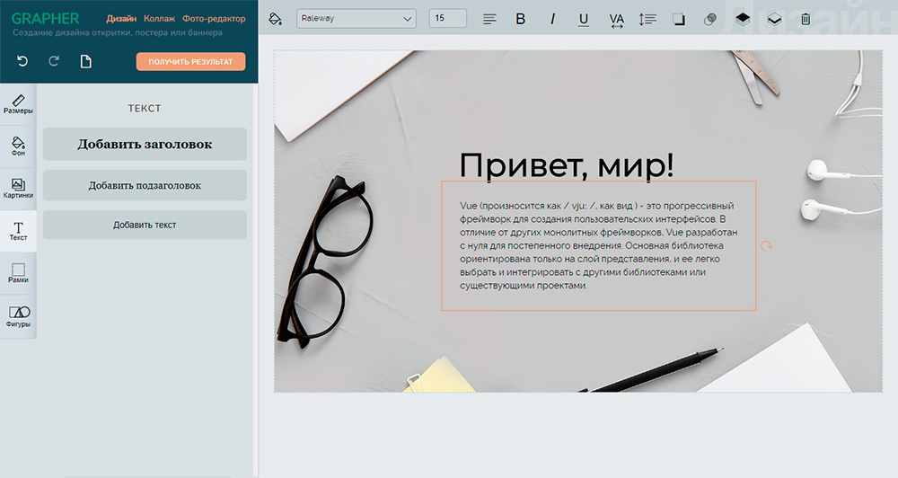
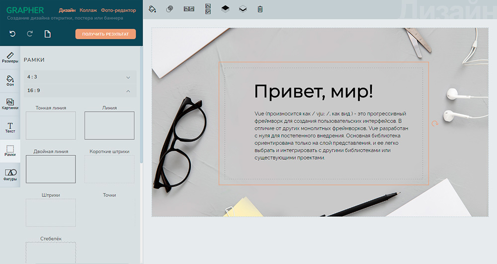
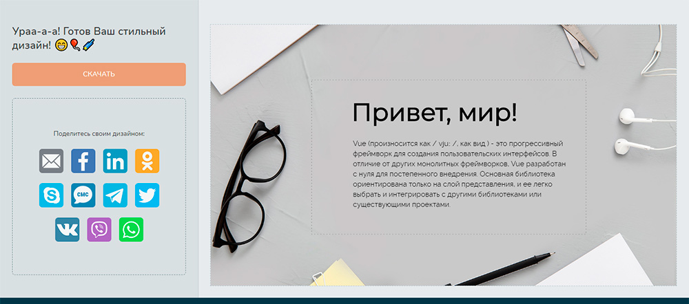

Онлайн конструктор открыток, постеров и баннеров GRAPHER
Редактор GRAPHER предназначен для конструирования графического проекта в браузере.
В нем можно самостоятельно сделать открытку, приглашение или рекламный баннер для сайта буквально за 3 минуты. Интуитивно понятный, все функции на виду, не нужно ничего искать. Изменить любой элемент можно моментально без лишних кликов на функциональные блоки и контекстные меню команд.
Готовую работу можно скачать, распечатать, отправить по почте, WhatsApp или Viber, а также поделиться ею в социальных сетях.
Что может конструктор
- Выбрать цвет фона или изображение, загрузить свою фоновую картинку, затонировать фон.
- Добавить картинки или загрузить свои. Обрезать изображение, добавить ему рамку и скруглить углы.
- Наложить заголовок или блок текста.
Инструменты для работы с текстом: цвет, шрифт, размер шрифта, выравнивание текста, насыщенность и начертание, межбуквенный и межстрочный интервал, тень, прозрачность. - Добавить рамки и уголки, установить им нужный цвет.
- Разместить на листе геометрические фигуры, выбрать их цвет, добавить контур.
Любой элемент можно:
- передвигать по листу,
- масштабировать и поворачивать с помощью мыши,
- отобразить зеркально по горизонтали и вертикали,
- переставить на уровень ниже или выше,
- изменить его прозрачность,
- удалить.
GRAPHER — бесплатный сервис и без водяных знаков с логотипом. С его помощью любой пользователь сможет погрузиться в творчество, заняться графическим дизайном, поэкспериментировать с разным оформлением композиционных элементов.
Использованные технологии и плагины:
- Vue.js
- JavaScript события мыши
- Canvas
- SVG
- Генерация и подключение веб-шрифтов
- Dom-to-image (получение изображения из HTML элемента)
- Загрузка изображения на сервер (PHP)
- Vue-social-sharing (кнопки Поделиться)
Ссылки
Адрес проекта: Онлайн конструктор GRAPHER
Скриншоты


